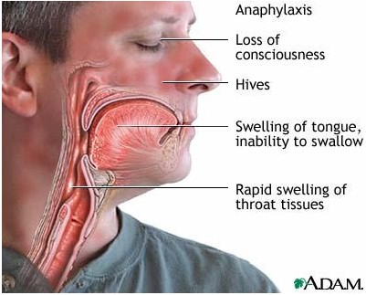

Allergic shock (anaphylaxis) is a potentially life-threatening allergic reaction that can affect a number of organs at the same time. Allergens that typically lead to anaphylaxis are foods, medications, and venom (bee stings). Aeroallergens rarely lead to anaphylaxis.
Some or all of the following symptoms may occur:
- Hives
- Nasal congestion, runny nose, itchy eyes
- Swelling of the tongue and/or throat
- Abdominal discomfort, nausea, vomiting, diarrhea
- Shortness of breath, wheezing, coughing
- Low blood pressure leading to lightheadedness, passing out, or shock
Anaphylactic shock occurs when blood vessels enlarge excessively due to an allergic reaction, which causes a significant drop in blood pressure. This can result in inadequate blood flow to the organs in the body and is an emergent, life-threatening condition.